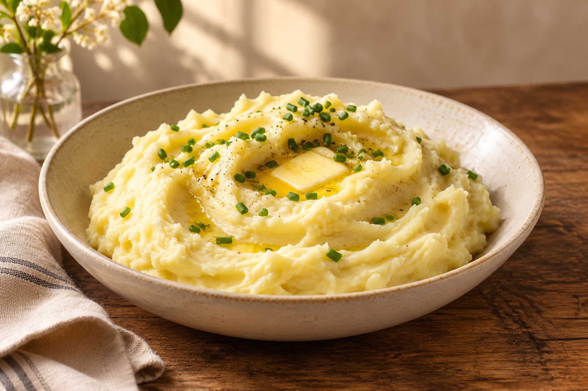

Mashed Potatoes

Description
Enjoy our irresistibly creamy mashed potatoes, whipped to a smooth, fluffy perfection with rich butter and a touch of seasoning. Topped with melted butter and freshly chopped chives, this classic comfort food is the perfect addition to any meal.
Ingredients
- 2 lbs potatoes (Yukon Gold or Russet)
- 4 tablespoons butter
- 1/2 cup milk or heavy cream
- Salt and pepper
- Fresh chives (optional)
Steps
- Prepare the potatoes: Peel and cut the potatoes into evenly sized chunks.
- Boil: Place in salted water and boil for 15–20 minutes until fork-tender.
- Mash: Drain the potatoes and mash until smooth.
- Add butter and milk: Stir in butter and gradually add warm milk or cream until creamy.
- Season and serve: Add salt and pepper to taste. Garnish with butter and chopped chives.
Back